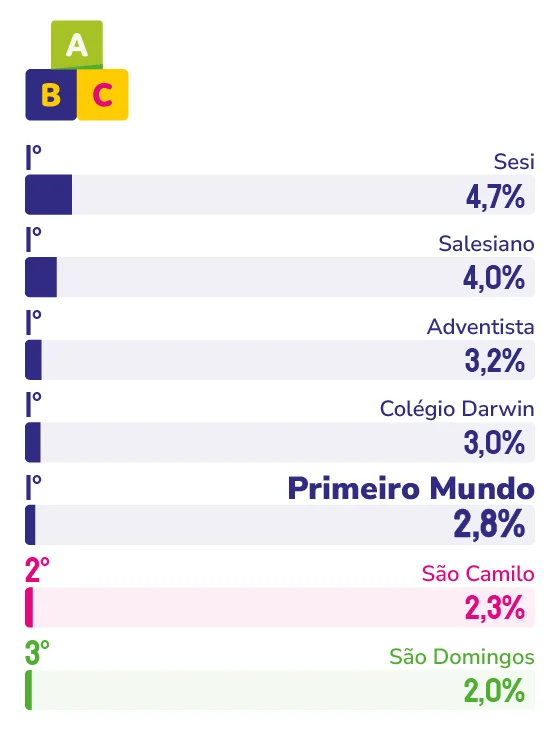

INSTITUIÇÃO DE ENSINO INFANTIL PARTICULAR
PRIMEIRO MUNDO
Reconhecido espontaneamente pelos capixabas em Marcas Ícones, o Centro Educacional Primeiro Mundo une acolhimento genuíno, protagonismo do aluno e um credenciamento internacional que atesta o que as famílias capixabas conhecem há anos.
Receber um selo de reconhecimento internacional diz muito sobre uma instituição. E foi o que aconteceu com o Centro Educacional Primeiro Mundo, que conquistou, em abril deste ano, o credenciamento International Baccalaureate (IB), programa de educação reconhecido mundialmente por seu rigor pedagógico e foco no desenvolvimento de alunos investigadores, autônomos e preparados para atuar além das fronteiras.
“A decisão de nos tornarmos uma escola com selo internacional IB validou um projeto pedagógico e um programa de investigação que já era prática na nossa escola. Para alcançarmos o selo, foram feitos pouquíssimos ajustes”, explicam os diretores da instituição, Juliana dos Santos e João Carlos Moraes. Foram, na verdade, décadas de escolhas pedagógicas consistentes que, agora, ganham um reconhecimento global para se somar ao reconhecimento já conquistado entre os próprios capixabas.
O reconhecimento local, por sua vez, tem raízes concretas. No Primeiro Mundo, o vínculo com as famílias começa cedo, desde a Educação Infantil, quando a criança já é tratada como protagonista do próprio aprendizado. “A partir da Educação Infantil, o aluno se torna protagonista de sua aprendizagem, medida pelos profissionais que atuam no segmento”, afirmam os diretores.
Mas o que sustenta essa relação ao longo do tempo é algo que vai além da proposta pedagógica. “O atendimento e a proximidade do corpo técnico pedagógico com as famílias é o nosso maior diferencial.” O Primeiro Mundo é uma escola na qual os pais conhecem os nomes dos professores, que responde quando chamada, que acompanha o desenvolvimento de cada aluno como se fosse único, uma escola que o capixaba lembra primeiro.
Os valores que guiam esse trabalho cotidiano não são abstratos. Curiosidade, autonomia, protagonismo, respeito, cidadania e responsabilidade social compõem o DNA do Primeiro Mundo e orientam cada decisão pedagógica. “Nossa formação global evidencia que o aluno seja capaz de resolver qualquer tipo de problema e reconhecer-se como cidadão do mundo atuando local, nacional e internacionalmente”, explicam os diretores. Essa é uma proposta que o mercado capixaba passou a valorizar cada vez mais, ou seja, escolas com programas bilíngues e que desenvolvem a autonomia real dos filhos, não apenas o conteúdo.
Para os próximos anos, o caminho está traçado com clareza. O aprofundamento do programa de investigação IB nas etapas já credenciadas, aliado à manutenção dos resultados expressivos em olimpíadas e aprovações em universidades públicas e privadas nos segmentos de Ensino Fundamental e Médio, marca a agenda 2026 e 2027, afinal, o Primeiro Mundo é uma escola que não precisa escolher entre excelência acadêmica e formação humana, uma vez que dentro dela, esses dois caminhos nunca foram separados.
Sobre o que não pode nunca mudar dentro da escola, os diretores são diretos: o acolhimento é inegociável. “A personalização e o protagonismo do aluno são pilares da instituição”, reforçam. Para eles, tudo pode evoluir – a tecnologia, os métodos, os espaços –, mas a essência de uma escola que enxerga cada aluno como um indivíduo a ser desenvolvido, não um conteúdo a ser transmitido, deve sempre permanecer.

Juliana dos Santos e
João Carlos Moraes
Diretores do Centro Educacional Primeiro Mundo
“Nossos valores são curiosidade, autonomia, protagonismo, respeito, cidadania e responsabilidade social. Nossa formação global evidencia que o aluno seja capaz de resolver qualquer tipo de problema e reconhecer-se como cidadão do mundo atuando local, nacional e internacionalmente.”
94
